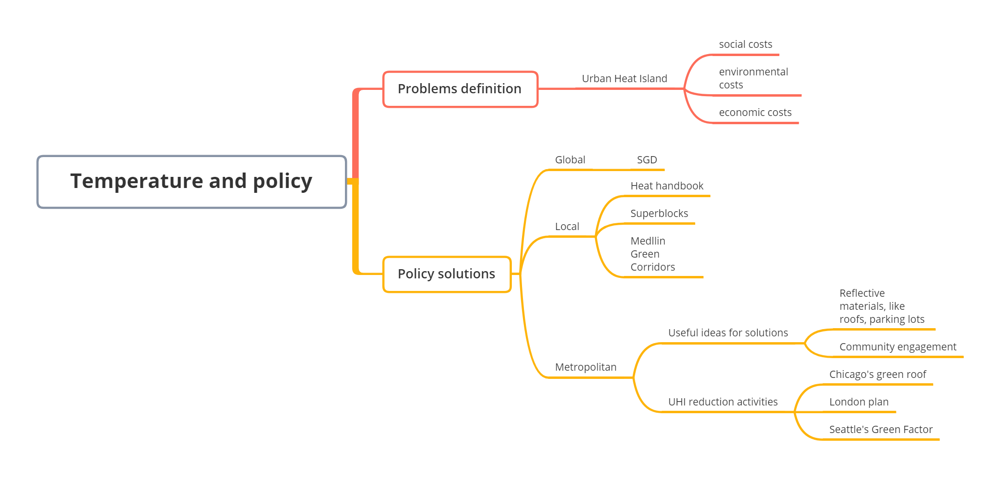
8 Week8 Temperature and policy
8.1 Summary
8.1.1 Mind map
The mind map shows basic structure for this week lecture, and the key point is recognizing the gap among global, local, metropolitan, and involving data analysis. The detailed and data-driven interventions will be the great measures to fill the current policy gap in many urban problems, like urban heat island, pollution and so on.
8.1.2 Temperature Problem Definition
8.1.2.1 Urban Heat Island (UHI)
What is UHI?
The urban heat island refers to the city center has higher temperature than the suburb and rural area.
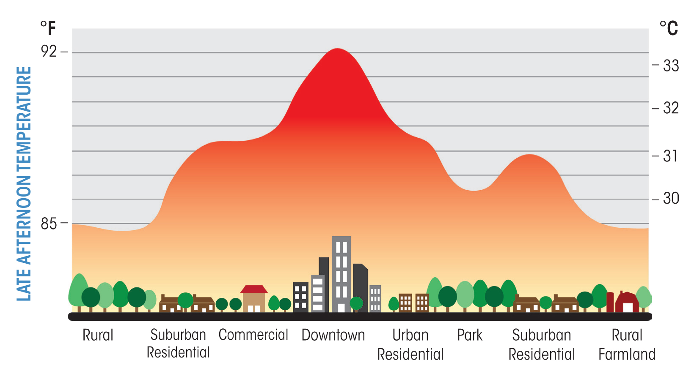
Why UHI happens?
Many factors causes UHI, like reduced natural landscape,urban construction materials, heat from human activities, and others.
| UHI factors | Why they increase temperature |
|---|---|
| More dark surfaces | Absorb and retain more heat |
| Less vegetation | Less cooling in the environment |
| Human activities | Industrial production generate more heat |
UHI costs
UHI has many negative effects on our society.
| Aspects | Costs |
|---|---|
| Social | High mortality in urban area |
| Environmental | Increased energy usage (more fossil fuels and pollution) |
| Economic | GDP loss |
8.1.3 Policy solutions
Policy can provide cities a good direction that help them to mitigate UHI effects, and the policy solutions basically can be described at the following three levels. However, all of this policies solutions have limitations. They doesn’t consider the feasibility and the specific implementations for cities.
8.1.3.1 Global
Some global policies are related to the mitigation of UHI, but there don’t have specific guidance for implementation of cities, and they are just big goals and targets.
New Urban Agenda
Point 37 We commit ourselves to promoting safe, inclusive, accessible, green and quality public spaces, including streets, sidewalks and cycling lanes, squares, waterfront areas, gardens and parks, that are multifunctional areas for social interaction and inclusion, human health and well-being.
Point 79 We commit ourselves to promoting international, national, subnational and local climate action, including climate change adaptation and mitigation, and to supporting the efforts of cities and human settlements, their inhabitants and all local stakeholders as important implementers.
Sustainable Development Goals (SDG)
Goal 11 Make cities and human settlements inclusive, safe, resilient and sustainable.
8.1.3.2 Local
Beat the heat handbook
This hand book from United Nations is the first major document that has specific integration into policy. Although it has some specific interventions in the local level, the handbook is so much information for local planners and managers. Also, interventions don’t contain specific procedures and steps for city managers, and solutions to reduce the urban temperature.
Superblock in Barcelona
This right picture shows a superblock. In the superblock, cars are restricted or banned, this will create more spaces for walking and bicycling. Outside the superblock, the traffic speed is limited with a maximum (50km/h). This will provide more green spaces for residents and encourage people to walk and bicycle, and reduce heat, noise and pollution. The problem for this plan may cause less business because of less car, and less community support.
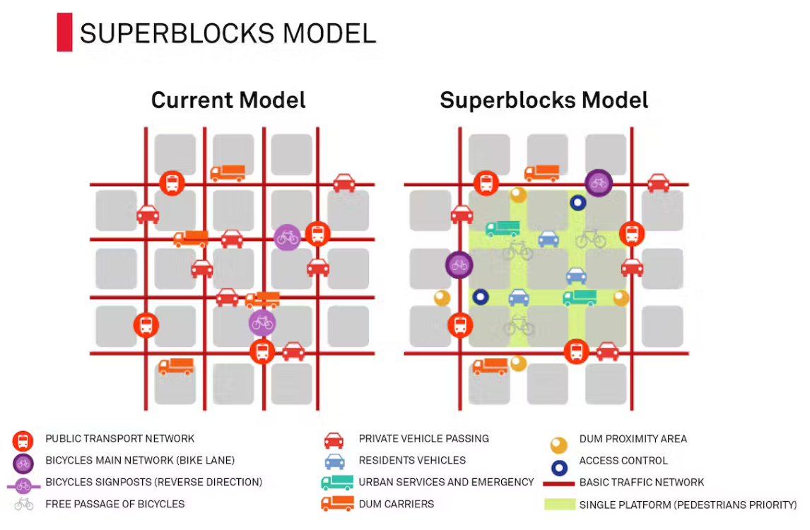
The video provides a really good introduction about superblock, and I think it is a nice idea in my future geographic study.
Medellín Green Corridors
This plan intends to build 36 corridors along 18 roads and waterways in the city, this will reduce 4 degrees for their temperature.
Sydney’s western suburbs
This plan assesses the current state and the future of UHI in Western Sydney, which predicts the increasing severity and frequency of heat waves, and effects on citizens.
8.1.3.3 Metropolitan
Some of metropolitan plans have a temperature reduction activities, and they can be improved in the future. There are some of potential useful ideas which may combine in the temperature reduction.
use reflective materials (like roofs, parking lots)
engage community members
better accessibility to green spaces
better planned community avoid disparities
Seattle’s policy
The policy in Seattle requires all the citizens reach the minimum score established by the zoning your property, and this engages citizens to indirectly reduce the UHI. The limitation of this are no requirments about locations of green vegetation, which may have no influence on temperature reduction.
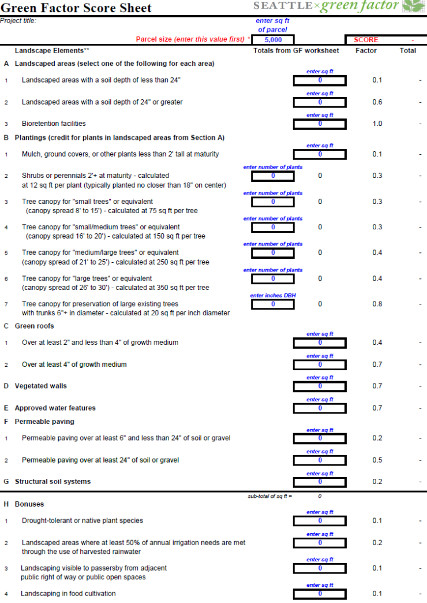
Fremantle’s Urban Forest Plan
This plan go through more details because it uses data to analyze where to increase the green spaces. In terms of limitation, it only include one month data, which may biased. Also, the analysing scale (the block) they used are too big. For example, the temperature in block may be various, but in this case the temperature is same in each block.
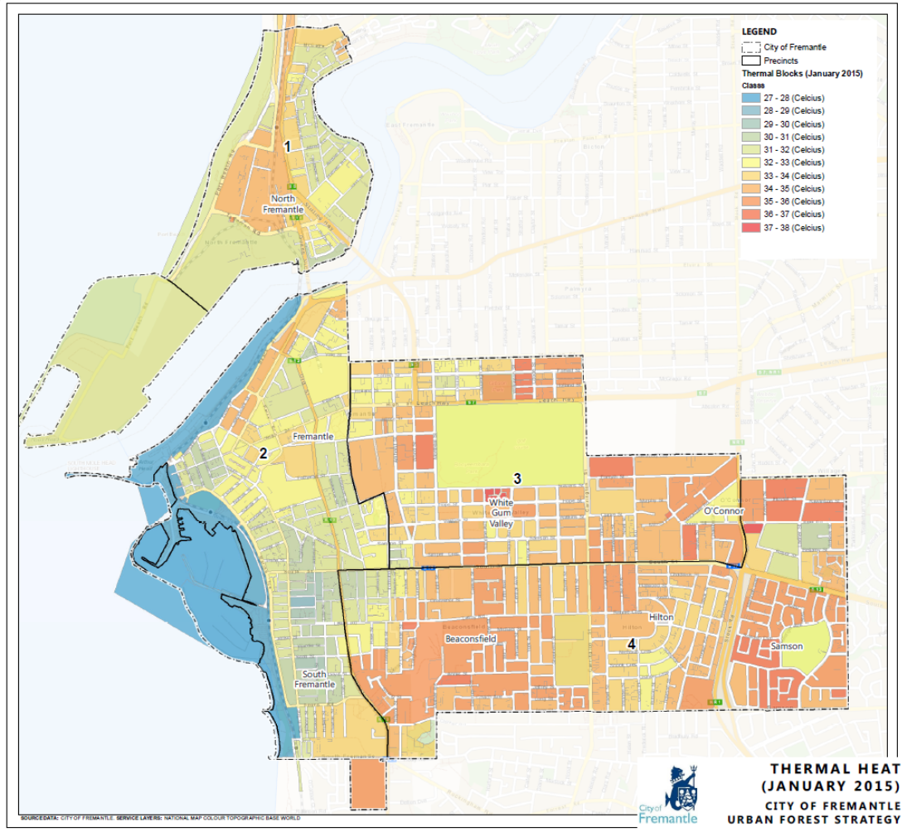
8.1.4 Approaching projects
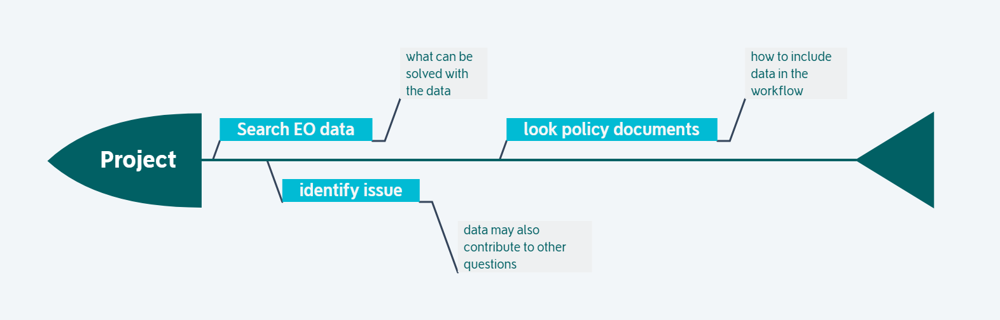
8.1.5 Temperature applications on GEE
The export the temperture shapefile on GEE is useful for doing future researches. In this practical, I used both Landsat and MODIS data to generate LST data for Tianjin, China. The MODIS data is better because it can scan twice a day for the same place. The detailed steps were summarzied in the workflow.
My code link: https://code.earthengine.google.com/6492a6b735deeb5904360326cfde723e
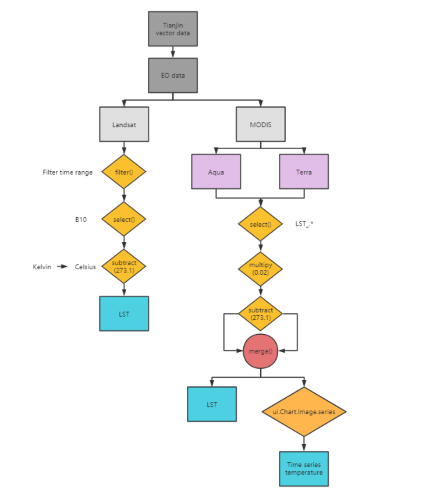
The LST from Landsat was displayed using the same palette with MODIS, so it seems not really good, and also there is a clear dividing line on the map. I guess this is because the LST data were extracted from two separated Landsat images.
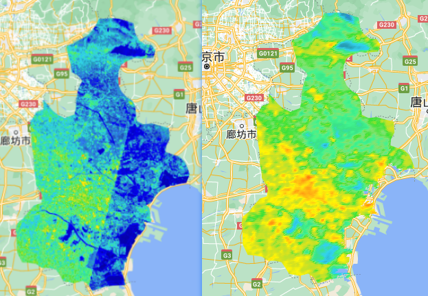
The spatial unit temperature were calculated on GEE, and then exported to shapefile using R to analyze percentile rank. The process of this step is easier in R rather than using GEE.
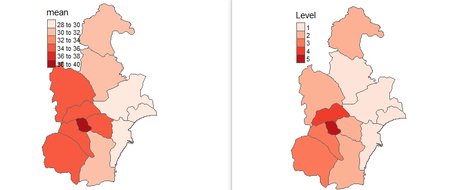
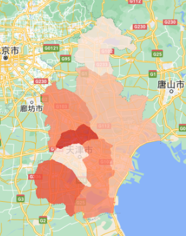
The time series chart was generated on GEE, which is quite easy.
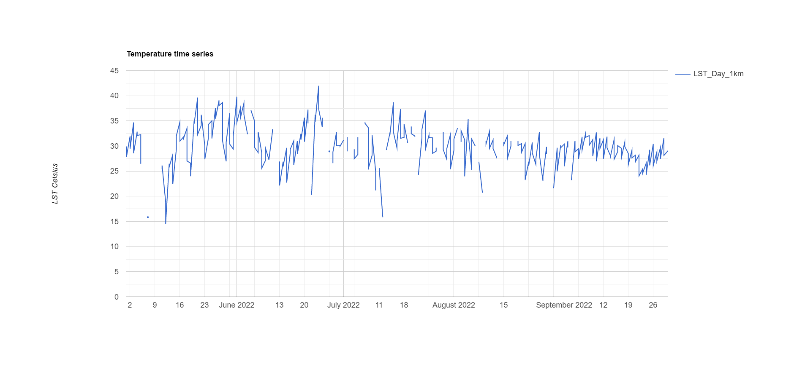